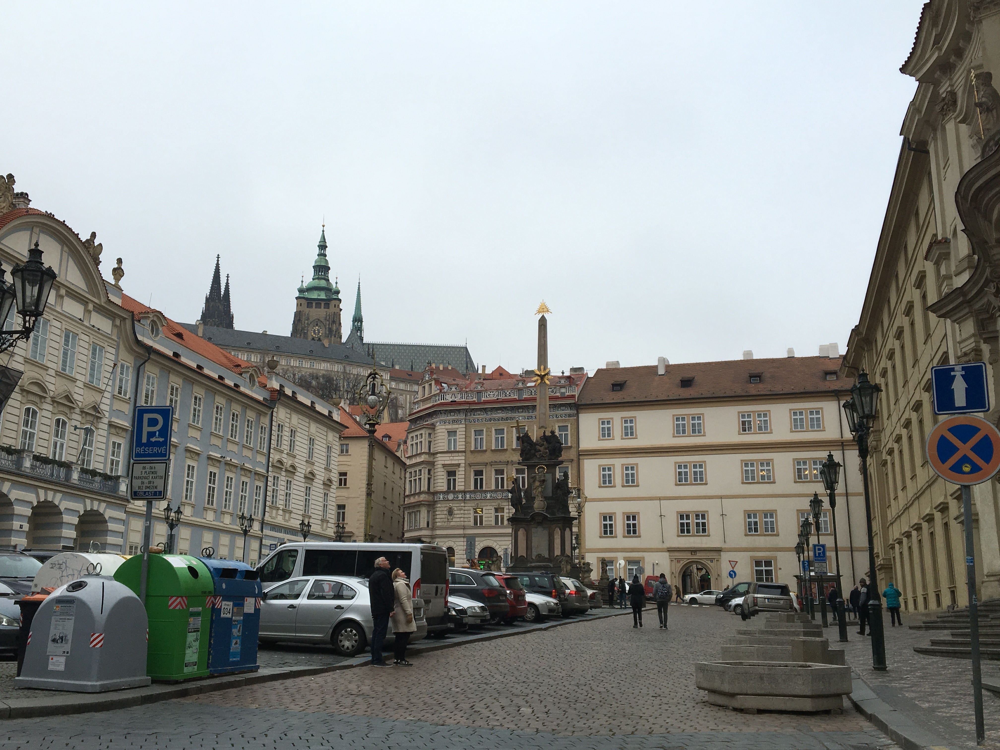

"Czech republic is located in a Central Europe, often said it's in the "hearth of Europe". This country has a border with Germany, Poland, Austria and Slovakia. Czech republic has a population of 10,610,947 and area of 78,866km2. Capital city of Czech republic is Prague."
"Prague is the capital and largest city in the Czech Republic, the 14th largest city in the European Union and also the historical capital of Bohemia. Situated in the north-west of the country on the Vltava river, the city is home to about 1.3 million people, while its larger urban zone is estimated to have a population of 2.6 million. The city has a temperate climate, with warm summers and chilly winters."
"Prague is often called as a "city of hundred spires". When it got this name in the 19th century by writer Josef Hormayer, but the truth is that first person who counted all spires in Prague was Bernardo Bolzano. At the time there were 103 spires in Prague. But these days Prague has over a 500 spires."
"According to Prague.TV, around 7millions tourists visited Prague in 2016. Every tourist who visits Prague falls in love with this city, located in the hearth of Europe. It is not just because of its own history, which is written in an architecture. But also because of food, beer and very welcoming atmosphere."

"Prague is classified as a "Beta+" global city according to GaWC studies and ranked sixth in the Tripadvisor world list of best destinations in 2016. Its rich history makes it a popular tourist destination and as of 2014, the city receives more than 6.4 million international visitors annually. Prague is the fifth most visited European city after London, Paris, Istanbul and Rome."
"No matter how much time you spend in Prague, there will be always something new to see. Prague is a city with unlimited options. According to the Daily Telegraph, best places to visit are Prague castle with gothic St.Vitus Cathedral, Old town square with astronomical clock and Charles bridge. But I would also recommend Golden lane, old Jewish quarter and Lesser quarter."
"The city has more than ten major museums, along with numerous theatres, galleries, cinemas and other historical exhibits. An extensive modern public transportation system connects the city. Also, it is home to a wide range of public and private schools, including Charles University in Prague, the oldest university in Central Europe"
"Czech republic has a strong beer culture since 993 AD. When czech beer was brewed in this early period mostly in monasteries. So with such a strong beer history, not surprisingly, Czech republic is the number one country in consuming the beer. And according to the BBC, in some places in Prague, beer is actually cheaper than water. Not just beer, but also food is delicious too. Dumplings are most common Czech side dish. When you are there you have to try beef goulash, roasted duck with cabbage or beef in sour cream sauce. As I said, all these dishes come with side of dumplings. And if you like desserts, you can not leave Prague without trying our apple strudel."
"If we look at Prague and Czech republic from a historical side, we know that first people on this territory of modern Czech republic were Celtic's tribes in the year 500 BC. Since that Czech republic went through many different rulers and names. For example during Medieval era, it was called Kingdom of Bohemia. When it was named after the biggest region of Czech republic, which is Bohemia. Another two regions are named Moravia and Silesia. In the 14th century Prague flourished the most in hands of famous ruler Charles IV. ,who built Charles Bridge, together with New Town and Charles University, which is one of the oldest universities in Europe. 14th century was a golden era for Prague. However Prague castle was already built in the year of 880 and it is one of the largest castles in the world."
"Prague has been a political, cultural and economic centre of central Europe complete with a rich history. Founded during the Romanesque and flourishing by the Gothic, Renaissance and Baroque eras, Prague was the capital of the kingdom of Bohemia and the main residence of several Holy Roman Emperors, most notably of Charles IV (r. 1346 - 1378). It was an important city to the Habsburg Monarchy and its Austro-Hungarian Empire. The city played major roles in the Bohemian and Protestant Reformation, the Thirty Years' War and in 20th-century history as the capital of Czechoslovakia, during both World Wars and the post-war Communist era."
"So no matter how many countries you have traveled to or where you are going, Prague will sweep you off your feet." As it is stated in this quote, Prague is not just an ordinary city. It is a place where you feel like in a living fairytaile. With its welcoming hospitaly and best beer. This is one of the most beautiful cities in Europe, and you should not miss it."